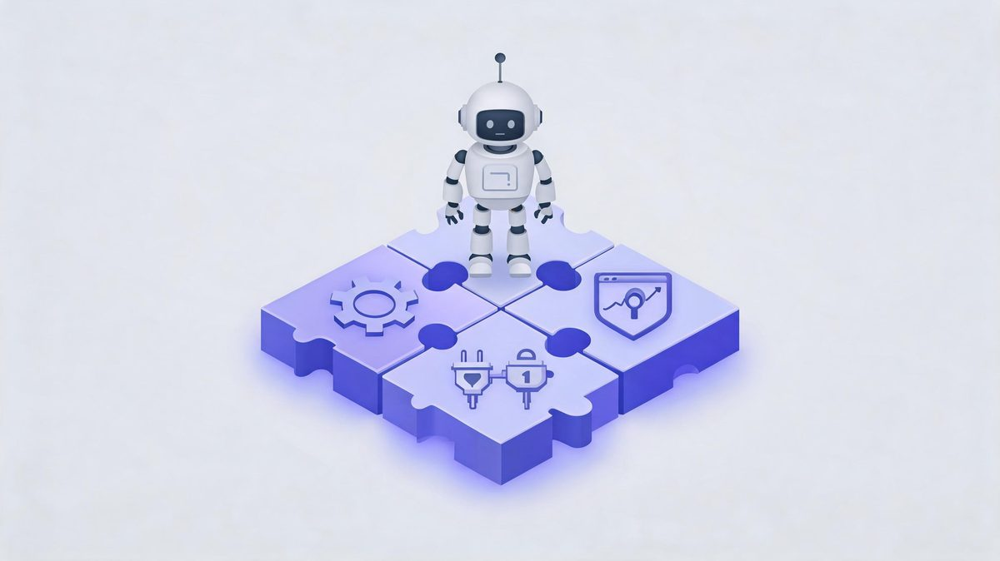
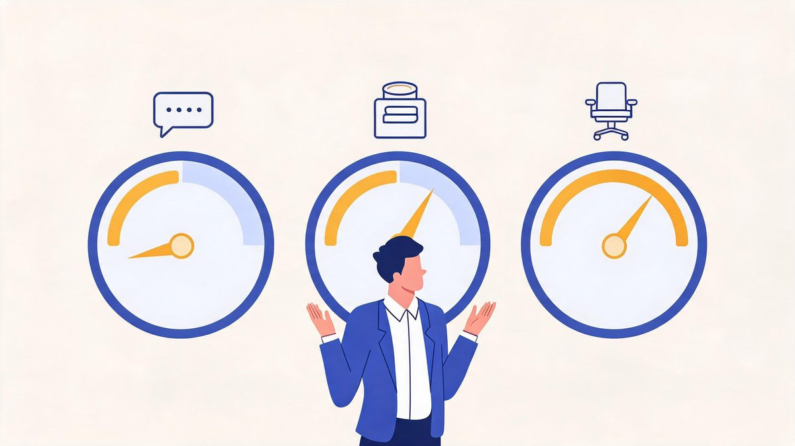
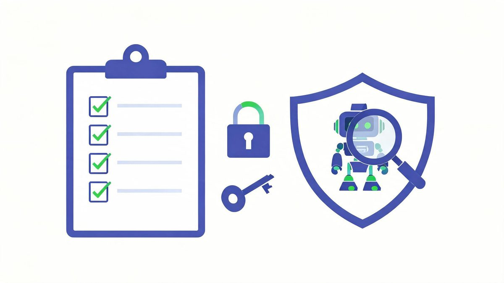

AI Agent Deployment Platforms: What Businesses Need in 2026
Choosing an AI agent platform in 2026 feels like choosing a phone plan in 2005 — every option looks the same until the first bill arrives. The platform itself matters less than where your data and identity system already live, and the pricing model matters more than any demo.
Quick answer: AI agent deployment platforms split into four camps: vendor-native (Salesforce Agentforce for CRM shops, Microsoft Copilot Studio for M365 teams), mid-market suites (HubSpot Breeze), no-code horizontal tools (Zapier AI Agents, Lindy), and code-first frameworks (LangChain, n8n). Pick by your existing stack and identity system, price your real volume before committing, and demand scoped credentials plus audit logs from day one.
Key takeaway: The platform decision is a stack decision. Agentforce fits Salesforce shops, Copilot Studio fits Microsoft 365 teams, Breeze fits HubSpot users, and horizontal tools fit everyone else. Price per-message versus per-credit versus per-seat models against your actual volume — the same workflow can differ by thousands of dollars annually across platforms.
TL;DR:
- Four camps, one rule: follow your data and identity system — Salesforce → Agentforce, M365 → Copilot Studio, HubSpot → Breeze, mixed stack → horizontal tools.
- Pricing models diverge fast: per-message, per-credit, and per-seat plans reward different workloads; model your volume before signing.
- Security inheritance matters: vendor-native platforms inherit enterprise identity and compliance; horizontal tools need you to build it.
- No platform removes governance work — scoped credentials, verification, and audit logs stay your responsibility everywhere.
Table of Contents
What Are AI Agent Deployment Platforms?
An AI agent deployment platform is the system a business uses to build, host, connect, and govern AI agents — the runtime, the tool connections, the permission controls, and the monitoring, all in one place. Think of it as the difference between hiring a worker and having an office: the agent is the worker, the platform is the office with badge readers, desks, and security cameras.

What are AI agent deployment platforms?
What are AI agent deployment platforms? An AI agent deployment platform is the system a business uses to build, host, connect, and govern AI agents: the runtime, the tool connections, the permission controls, and the monitoring in one place.
According to 2026 platform comparisons, the four camps are Salesforce Agentforce for CRM-centric organizations, Microsoft Copilot Studio for Microsoft 365 environments, HubSpot Breeze for mid-market stacks, and horizontal tools like Zapier AI Agents, Lindy, and LangChain for custom workflows (Sources: AgentTeams, SaaSCentury, Dapta, 2026). Gartner forecasts $2.595 trillion in AI spending for 2026, up 47% year over year, and IDC finds 88% of pilots stall on integration gaps the platforms exist to solve (Sources: Gartner, IDC, 2026).
For example, Copilot Studio agents authenticate through Microsoft Entra automatically, while a LangChain build needs a separate identity layer. We found buyers who map the existing stack first choose correctly in under a week.
First, inventory the systems of record. Second, shortlist platforms anchored to that stack. Finally, compare features and price only within the winning camp.
The Four Platform Camps
Every 2026 option fits one of four camps. Knowing your camp eliminates three-quarters of the market instantly.
Which AI agent platform should my business choose?
Which AI agent platform should a business choose? The platform decision follows the stack: Salesforce shops get the shortest path through Agentforce, Microsoft 365 organizations through Copilot Studio, HubSpot users through Breeze, and teams with mixed stacks through horizontal platforms like Zapier AI Agents, Lindy, or n8n with AI nodes.
According to IDC research, integration blockers keep 88% of agent pilots out of production, and stack-native platforms remove most blockers by inheriting existing connections (Sources: IDC, 2026). Zscaler's 2026 survey adds the adoption context: 62% of organizations are experimenting with agents while 23% have reached broader deployment (Sources: Zscaler, 2026).
For example, a company running M365 and Teams ships an internal-helpdesk agent in days on Copilot Studio because authentication, permissions, and compliance inherit automatically. We found feature comparisons mislead more than help, because every camp demos well.
First, write down the systems of record. Second, match the camp anchored to the systems. Finally, demo only within the winning camp.
Pricing Models: The Bill Nobody Predicted
Platform pricing has three shapes, and they punish different workloads. Model your volume before signing anything.
How much do AI agent platforms cost?
How much do AI agent platforms cost? Three pricing models dominate 2026: per-conversation plans charging each customer interaction, per-credit plans charging by compute and tool calls, and per-seat plans charging per human user.
According to platform pricing documentation, the same workflow handling 10,000 monthly runs can cost hundreds on one model and thousands on another. Vendors add session fees like $49 per 100 sessions after allotments (Sources: platform pricing pages, 2026). The stakes: 62% of organizations now run agent experiments, IDC finds 88% of pilots never reaching production, and Gartner forecasts $2.595 trillion in AI spending (Sources: Zscaler, IDC, Gartner, 2026).
For example, teams using Zapier AI Agents price 30,000 support questions monthly and watch conversation plans burn fast, while light-usage sales agents fit per-seat pricing cheaply. We found the modeling exercise takes one afternoon and prevents the most common renewal shock.
First, count the real monthly runs. Second, price those runs on each candidate model. Finally, negotiate the model matching the workload shape.

| Model | How It Charges | Fits | Punishes |
|---|---|---|---|
| Per-conversation | Each customer interaction billed | High-value support flows | High-volume simple queries |
| Per-credit | Compute + tool calls metered | Variable agent workloads | Unpredictable spikes |
| Per-seat | Flat per human user | Heavy internal daily use | Large teams, light usage |
How to Choose: The Stack-First Decision
Can a business switch AI agent platforms later?
Can a business switch AI agent platforms later? Switching is possible but costly: agent logic, permission scopes, and integration configurations need rebuilding on the new platform, and pricing model changes reset the budget baseline.
According to 2026 platform governance analyses, teams reduce switching pain by documenting workflows platform-neutrally and keeping integration credentials centralized in a vault (Sources: MintMCP, 2026). The cost of skipping documentation shows in the data: 88% of agent pilots never reach production, while Gartner forecasts $2.595 trillion in AI spending flowing through platforms where rebuild costs compound (Sources: IDC, Gartner, 2026).
For example, a workflow documented as trigger on form, read CRM, draft email, await approval, ports between Copilot Studio, Zapier, and n8n in hours, while an undocumented one ports in weeks. We found the portable mindset costs little upfront and saves months later.
First, document every workflow in plain language before building. Second, centralize credentials rather than scattering keys. Finally, re-run volume pricing annually, because platform pricing shifts every year in this market.
The Stack-First Selection Sequence
- Step 1 — Inventory: list your systems of record (CRM, email, storage, identity provider)
- Step 2 — Match camp: shortlist the platform anchored to that stack
- Step 3 — Volume pricing: model real monthly runs on each pricing model
- Step 4 — Security pass: confirm scoped credentials, audit logs, approval support
- Step 5 — Pilot: one workflow, 30 days, measured against baseline
Security and Scale Checks Before You Commit
The platform demo shows the happy path. These five checks show the rest of it — and they take one call with each vendor.
What security features should an agent platform include?
What security features should an agent platform include? Five security features are non-negotiable for agent platforms: scoped credential management with keys per agent, audit logs of every agent action, human-approval workflow support, data-residency options matching compliance needs, and identity integration with the existing provider.
According to enterprise platform analyses, vendor-native platforms inherit identity and compliance from Microsoft Entra or Salesforce automatically, while horizontal platforms require explicit setup (Sources: Appian, OriginXai, 2026). The stakes scale with adoption: 62% of organizations now experiment with agents, and IDC finds 88% of pilots stalling on integration at platform level (Sources: Zscaler, IDC, 2026).
For example, a healthcare company needs audit trails and data residency a consumer tool cannot provide, which rules out half the market instantly. We found the checks take one vendor call each when the questions are known.
First, ask how credentials are stored and rotated. Second, ask what the audit log records. Finally, ask what happens when the vendor changes the underlying model.

| Check | Ask the Vendor | Red Flag |
|---|---|---|
| Credentials | How are keys stored and rotated? | Shared keys, manual rotation only |
| Audit logs | What is logged, where does it live? | No per-action logging |
| Approvals | Can humans gate specific actions? | Approve-all or nothing |
| Identity | Does it integrate our SSO/Entra? | Separate agent identities only |
| Model changes | What happens on vendor model updates? | "Trust us" answers |
Scale checks complete the picture: concurrency limits (how many agent runs at once), API rate ceilings, and data-growth handling. IDC's finding that 88% of pilots stall on integration applies doubly at platform selection — the platform that cannot scale with your volume becomes the blocker itself (Sources: IDC, 2026). A platform chosen with these five checks plus a measured pilot joins the 23% of organizations running agents at broader deployment, according to Zscaler's 2026 survey (Sources: Zscaler, 2026).
FAQs
What are AI agent deployment platforms?
The systems businesses use to build, host, connect, and govern AI agents: Salesforce Agentforce, Microsoft Copilot Studio, HubSpot Breeze, Zapier AI Agents, Lindy, LangChain, n8n, and similar. The platform provides the runtime, tool connections, permission controls, and monitoring in one place.
Which AI agent platform should my business choose?
The one anchored to your existing stack: Agentforce for Salesforce shops, Copilot Studio for Microsoft 365, Breeze for HubSpot users, horizontal tools for mixed stacks. Your data and identity system make the decision — feature grids mislead.
How much do AI agent platforms cost?
Three pricing models exist: per-conversation, per-credit, and per-seat. The same 10,000-run workflow can cost hundreds or thousands annually depending on the model. Count your real volume first, then price each candidate model before committing.
Can a business switch AI agent platforms later?
Yes, with rebuilding costs for agent logic, permissions, and integrations. Document workflows in plain language and centralize credentials to keep switching feasible — portable designs port in hours, undocumented ones take weeks.
Do I need a developer to deploy an AI agent?
Not on no-code platforms like Zapier or Copilot Studio for simple workflows. Code-first frameworks like LangChain need developers. Either way, IDC's 88% figure applies: the platform removes code, not the integration and governance work.
What security features should an agent platform include?
Scoped credential management, complete audit logs, human-approval support, data-residency options, and identity integration with your existing provider. Vendor-native platforms inherit enterprise security; horizontal platforms require explicit setup.
The Bottom Line
The AI agent platform market is booming — Gartner's $2.595 trillion spending forecast guarantees that — but platform choice is a smaller decision than it looks. Your stack already narrowed the field: Salesforce shops land on Agentforce, Microsoft teams on Copilot Studio, HubSpot users on Breeze, everyone else on horizontal tools. The real work is pricing your actual volume on each pricing model, running the five security checks, and piloting one measured workflow before the annual contract signs. Teams that sequence it this way join the 23% deploying agents broadly; teams that demo first and model volume later fund the cancellation statistics. When the platform is chosen, the AI agent integration pillar guide walks the implementation, workflow automation covers the operational monitoring, and the business use-case guide frames the ROI case. Choose by stack, price by volume, govern from day one.
Sources
- Gartner — $2.595 trillion AI spending forecast (+47% YoY), 2026
- IDC — 88% of AI agent pilots never reach production, via Institute PM, 2026
- Zscaler Digital Experience Predictions 2026 — 62% experimenting, 23% broader deployment
- Platform pricing documentation: Microsoft Copilot Studio, Salesforce Agentforce, HubSpot Breeze, Espressive session pricing, 2026
- Platform comparisons: AgentTeams, OriginXai, Dapta, SaaSCentury, viasocket, MintMCP, 2026
- Appian — MCP-based enterprise agent integration, 2026